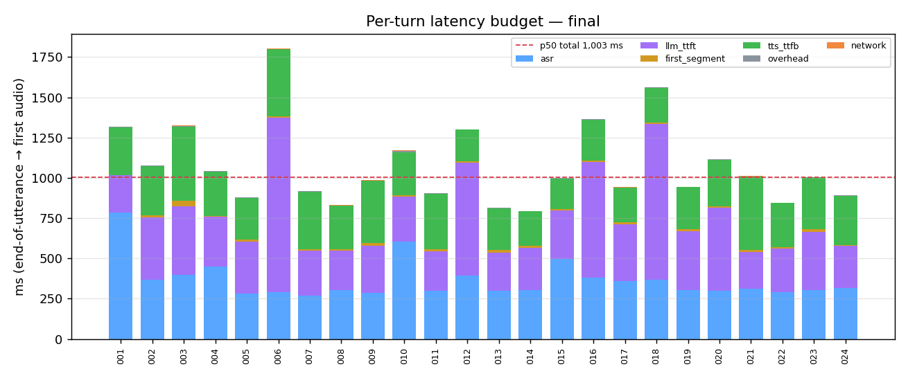
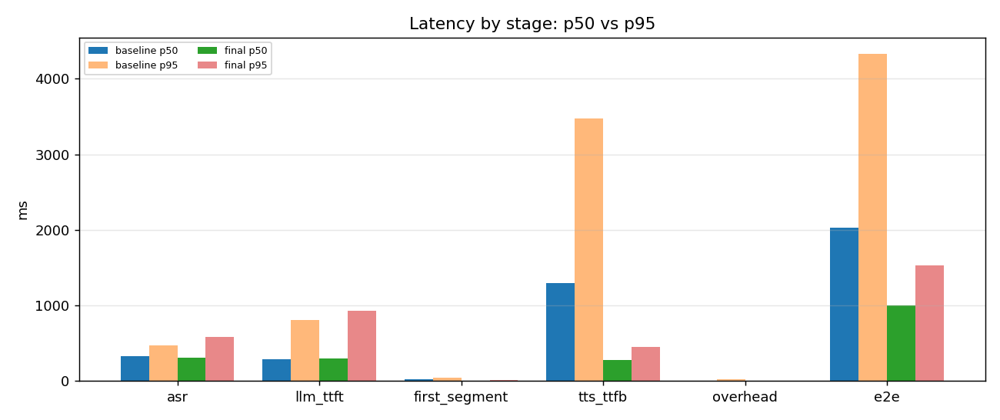

SkyMate: a real-time voice copilot for drone operations
 Live demo: http://rakeshburla.dpdns.org/skymate-realtime-voice-copilot/
· Code: https://github.com/burlarakesh1458-sys/skymate-realtime-voice-copilot
· Resume bullets: RESUME_BULLETS.md ·
License: MIT
Live demo: http://rakeshburla.dpdns.org/skymate-realtime-voice-copilot/
· Code: https://github.com/burlarakesh1458-sys/skymate-realtime-voice-copilot
· Resume bullets: RESUME_BULLETS.md ·
License: MIT
Browser mic → WebSocket → ASR → streaming LLM → streaming TTS → speaker. It records a latency budget for every turn and keeps working when a provider fails.
Every number in this README was measured in this repo's sandbox (2 vCPU, 7 GB RAM, no GPU, no microphone), against the live Groq API. Raw per-turn data is in
reports/.
1. Problem
A voice assistant only feels natural if it starts speaking about a second after you stop. To get there you have to handle three things that batch ML systems never deal with:
- Streaming. Audio arrives in 100 ms chunks. The LLM emits tokens. TTS must start on the first sentence, not the whole reply.
- A latency budget. "It feels slow" is not actionable. You need to know how many milliseconds go to ASR, LLM time-to-first-token, TTS time-to-first-byte and overhead, on every turn.
- Failure. ASR goes down, the LLM stalls, TTS has a quota problem. The system has to degrade audibly and honestly ("One moment.") instead of hanging in silence.
SkyMate is a drone-ops copilot (pre-flight checks, battery and wind limits, failsafes, DGCA Digital Sky basics). It answers in short spoken sentences and is built to handle all three.
2. Architecture
flowchart LR
subgraph Browser
MIC[Mic + AudioWorklet<br/>16 kHz PCM16, 100 ms] --> WSC[WebSocket client]
WSC --> PLAY[Gapless playback<br/>+ barge-in]
WSC --> UI[Live transcript +<br/>stacked latency bars]
end
WSC <-->|typed JSON events| WS
subgraph Server [FastAPI server]
WS[/ws session/] --> VAD[Energy VAD<br/>endpointing]
VAD --> ASR
subgraph Pipeline [VoicePipeline turn]
ASR[ASR chain<br/>Groq Whisper → faster-whisper] --> LLM[LLM chain, streaming<br/>gpt-oss-20b → 120b → canned]
LLM -->|tokens| CH[Sentence chunker<br/>full/sentence/clause/eager]
CH -->|segments, asyncio.Queue| TTS[TTS chain<br/>Orpheus → Piper → text-only]
ACK[Ack watchdog<br/>'One moment.'] -.-> TTS
end
RES[[Timeouts · retry + Retry-After · circuit breakers · fault injection]] -.- Pipeline
Pipeline --> MET[(SQLite + JSONL<br/>per-turn budget)]
end
TTS -->|tts.audio frames| WS
MET --> REP[scripts/report.py<br/>p50/p95 tables + PNG]
REPLAY[scripts/replay.py<br/>recorded WAVs] -->|same protocol| WS
sequenceDiagram
autonumber
participant B as Browser
participant S as Server (session)
participant A as ASR
participant L as LLM
participant T as TTS
B->>S: session.start
S-->>B: session.started (provider chains)
loop every 100 ms
B->>S: audio.chunk (PCM16)
end
S-->>B: vad.speech_start
B->>S: vad.end_of_utterance (or server VAD detects 700 ms silence)
S-->>B: vad.end_of_utterance(turn_id)
S->>A: transcribe(utterance)
A-->>S: text
S-->>B: transcript.final
S->>L: stream(messages)
Note over S: if no token after 1.5 s → ack "One moment." (pre-rendered audio)
L-->>S: token, token, …
S-->>B: llm.token …
S->>T: first segment (as soon as the chunker cuts it)
T-->>S: PCM
S-->>B: tts.audio (first audio = e2e mark)
L-->>S: [done]
S->>T: remaining segments (pipelined)
S-->>B: llm.done · tts.audio … · metrics(budget) · turn.done
opt user talks over the reply
B->>S: interrupt (or server VAD hears speech)
S-->>B: turn.done(status=cancelled)
end
Code map
| path | what |
|---|---|
app/protocol.py |
Pydantic discriminated unions for every client and server event |
app/pipeline.py |
One turn: ASR → LLM producer → chunker → queue → TTS consumer, plus the ack watchdog, fallbacks and budget |
app/resilience.py |
ProviderError taxonomy, full-jitter retry that honours
Retry-After, 3-state CircuitBreaker |
app/providers/ |
ASRProvider / LLMProvider /
TTSProvider protocols. Groq, faster-whisper, Piper, canned
LLM, Deepgram/ElevenLabs/Cartesia adapters, mocks, fault wrappers |
app/chunker.py |
Incremental sentence/clause chunker (handles abbreviations, decimals, markdown stripping) |
app/metrics.py |
Stopwatch milestones → budget decomposition → SQLite + JSONL |
app/server.py |
FastAPI app, WebSocket sessions, server VAD, barge-in,
/health, /api/metrics |
web/ |
Dependency-free client: AudioWorklet capture, playback queue, live transcript, stacked latency bars |
scripts/ |
gen_utterances, replay,
chunk_ablation.sh, report,
fault_demo, ws_client_test |
3. Event protocol
Every frame is JSON with a type discriminator, and
unknown or malformed frames are rejected. Audio is base64 PCM16 LE mono:
16 kHz upstream, with the sample rate stated on every
tts.audio frame.
| direction | type |
key fields | purpose |
|---|---|---|---|
| C→S | session.start |
label, sample_rate,
server_vad, chunk_mode, persona,
faults* |
open a session (*faults honoured only with
ALLOW_CLIENT_FAULTS=true) |
| C→S | audio.chunk |
data, seq |
100 ms of mic audio |
| C→S | vad.end_of_utterance |
client_ts |
client endpointing (push-to-talk release, replay) |
| C→S | text.input |
text |
typed query (skips ASR) |
| C→S | interrupt |
reason |
barge-in: cancel the in-flight turn |
| C→S | metrics.client |
turn_id, client_e2e_ms |
client-measured EoU → first audio |
| C→S | session.end |
close the session | |
| S→C | session.started |
session_id, providers,
faults |
ack plus active provider chains |
| S→C | vad.speech_start |
ts |
server VAD heard speech (client stops playback) |
| S→C | vad.end_of_utterance |
turn_id, source
(client/server_vad/max_length), audio_ms |
turn begins |
| S→C | transcript.partial |
text |
interim transcript (opt-in, ASR_PARTIALS=true) |
| S→C | transcript.final |
turn_id, text, provider |
final transcript |
| S→C | llm.token / llm.done |
token / text, provider |
streamed reply |
| S→C | tts.audio |
data, sample_rate, seq,
sentence, provider |
≤250 ms audio frames |
| S→C | ack |
text, reason (llm_slow /
asr_unavailable) |
degradation notice, also spoken |
| S→C | error |
code, stage, message,
recoverable |
a provider failed (and what happened next) |
| S→C | metrics |
budget, providers,
degraded |
per-turn latency budget |
| S→C | turn.done |
status (ok/degraded/cancelled/failed),
text_only |
end of turn |
4. Quickstart
python -m venv .venv && . .venv/bin/activate
make install # pinned runtime + dev deps
make models # Piper fallback voice (~60 MB); faster-whisper tiny.en downloads on first use
cp .env.example .env # set GROQ_API_KEY
make run # http://localhost:8000 → Connect → Start mic (or type)Docker (the offline fallbacks are baked into the image):
docker compose up --build.
make test # 45 unit/integration tests, mocked providers, no network
make utterances # synthesize the 24-query regression set (Piper)
make replay LABEL=mine # replay it through a running server over the real protocol
make ws-test # 7-check live WebSocket client test
make faults # 9 fault-injection scenarios against real providers
make report # p50/p95 tables + PNG charts → reports/LATENCY_REPORT.mdTo swap providers, change config only, for example
ASR_CHAIN=deepgram,faster_whisper,
LLM_CHAIN=groq,groq:openai/gpt-oss-120b,degraded or
TTS_CHAIN=elevenlabs,piper. GROQ_BASE_URL can
point at any OpenAI-compatible server.
5. Measured latency budget
Setup: 24 synthesized drone-ops questions replayed
over the WebSocket protocol (scripts/replay.py, explicit
end-of-utterance). Providers: Groq whisper-large-v3-turbo →
Groq openai/gpt-oss-20b (reasoning_effort=low) → Piper
en_US-lessac-low on CPU. e2e =
server-side end-of-utterance → first tts.audio frame sent.
client e2e adds the WebSocket hop as measured by the replay
client.
Final
configuration (final: eager chunking, 24/24 turns ok, ASR
WER 1.2%)
| stage | p50 (ms) | p95 (ms) | share of p50 e2e |
|---|---|---|---|
| ASR (EoU → final transcript, incl. upload) | 310 | 589 | 31% |
| LLM time-to-first-token | 305 | 927 | 30% |
| first token → first speakable segment | 10 | 16 | 1% |
| TTS time-to-first-byte | 275 | 448 | 27% |
| overhead (queueing, encoding, event loop) | 2 | 6 | <1% |
| e2e: time to first audio (server) | 1,002 | 1,531 | |
| network + client (localhost WS) | 2 | 5 | |
| client e2e | 1,003 | 1,532 | |
| LLM total | 386 | 986 |
"Our time to first audio is about 1.0 s at p50. ASR and LLM TTFT take roughly 300 ms each, Piper's first audio about 275 ms, and the orchestration overhead is 2 ms."

First run
(baseline): what the budget revealed
The first 24-turn run used clause chunking while other
jobs were saturating the shared 2-vCPU box (1-minute load average ≈ 9.3,
vs ≈ 4.1 during final):
| e2e p50 | e2e p95 | TTS TTFB p50 | TTS share of e2e | |
|---|---|---|---|---|
baseline (clause, load ≈ 9.3) |
2,026 | 4,329 | 1,293 | 64% |
final (eager, load ≈ 4.1) |
1,002 | 1,531 | 275 | 27% |
The budget pointed straight at CPU-bound TTS, not the network or the LLM. Most of the baseline-to-final gap comes from CPU contention (which this repo does not control), so I isolated the effect of the code change with an interleaved A/B:

Chunking A/B (interleaved: each utterance runs in all 4 modes back-to-back, so load drift hits every mode equally)
| mode | e2e p50 | e2e p95 | TTS TTFB p50 | TTS TTFB p95 | median paired saving vs
full |
|---|---|---|---|---|---|
full (no streaming to TTS) |
1,121 | 2,060 | 560 | 1,490 | – |
sentence |
916 | 1,906 | 371 | 1,135 | 60 ms (6/12 wins) |
clause |
1,030 | 1,642 | 472 | 940 | 65 ms (6/12) |
eager (≤7-word first segment) |
1,022 | 1,912 | 361 | 1,259 | 141 ms (7/12) |
What this showed: with Groq, gpt-oss produces its visible answer in a
burst. The time from first token to first segment is about 10 ms, so
"wait for a sentence" costs almost nothing. The lever is how much text
the first TTS call has to synthesize. Shortening the first segment cut
TTS TTFB p50 from 560 → 361 ms. With n=12 the e2e gains are modest and
noisy (about half the pairs win), and I report them that way.
eager is the default; the full tables are in reports/LATENCY_REPORT.md.
6. Resilience matrix
Measured with scripts/fault_demo.py: 9 scenarios, 26
turns, live Groq plus local fallbacks, and a fresh pipeline and breakers
per scenario. Faults use the same FaultConfig the server
reads from FAULT_* env vars. Details are in reports/RESILIENCE_REPORT.md.
| failure | detection | response | measured result |
|---|---|---|---|
| ASR down (Groq Whisper 503) | ProviderError(retryable) |
2 retries with jittered backoff → faster-whisper
tiny.en (local) → breaker opens after 3 failed turns |
4/4 turns answered; ASR stage 2.0–3.0 s on the contended CPU; on turn 4 the breaker was open, so Groq wasn't called at all. Fallback WER 6% (1 of 4 transcripts had errors) |
| All ASR down | chain exhausted | speak a pre-rendered apology,
ack(reason=asr_unavailable) |
apology audio 379 ms after EoU, status
failed, no hang |
| LLM slow (+2.5 s TTFT) | ack watchdog (1.5 s) | speak "One moment.", then the real answer | ack audio p50 1.83 s, answer at 3.7–4.5 s |
| LLM hangs | TTFT timeout 4 s (timeouts are not retried) | fall over to the canned safety reply | ack at ~1.8 s, canned answer audio at 5.0–5.2 s, never silent |
| LLM hangs → secondary model | same | gpt-oss-120b |
turn 1: 120b answered (TTFT 4.39 s incl. the 4 s timeout). Turn 2: 120b returned real 429s (shared RPM quota) → canned reply |
| Orpheus TTS (real, no injected fault) | HTTP 400 model_terms_required = permanent |
breaker opens on the first call → Piper | turn 1 paid one failed call; turns 2–3 skipped Orpheus; all 3 spoken |
| All TTS down | chain exhausted on 2 consecutive segments | text-only reply (turn.done.text_only=true), cached ack
still plays |
2/2 turns delivered as text, no hang |
| 30% random transient faults on every primary | retryable errors | retries absorb them | 8/8 turns produced audio (6 ok). The 2 degraded turns were a real Groq TTFT stall (>4 s → canned) and a slow 1.9 s TTFT (→ ack) |
| User talks over reply | interrupt / server VAD speech start |
cancel LLM and TTS tasks, persist metrics as
cancelled |
interrupt → turn.done(cancelled) in 105
ms (ws_client_test) |
| Malformed client event | Pydantic validation | error(bad_event), session stays open |
verified in ws_client_test |
Live WebSocket client test
(scripts/ws_client_test.py, real providers): 7/7
checks passed. The checks: health, session handshake, text-turn
event contract and ordering (client TTFA 667 ms), bad-event isolation,
barge-in, server-VAD-endpointed audio turn (WER 0), and client fault
override → local ASR fallback.
7. Design decisions
- Typed JSON events with base64 audio instead of raw binary frames. It is debuggable in any WS inspector and validated on both sides. The cost is about 33% bandwidth overhead on audio, which is fine at 32 kB/s upstream (binary frames are future work).
- Batch Whisper plus VAD endpointing instead of streaming ASR. Groq's Whisper is fast enough (p50 310 ms including upload) that a streaming ASR's added complexity isn't worth it here. Partials are available as opt-in because they cost one ASR call per interval against rate limits.
- Producer/consumer per turn. The LLM task feeds an
asyncio.Queueof segments and the TTS task drains it, so synthesis of sentence n overlaps generation of sentence n+1. - Timeouts are not retried. Only fast transient errors
are, and only within budget. A timeout has already spent the
stage's budget, so the pipeline fails over immediately. A 429 waits for
the server's
Retry-Afterhint, or skips to the next provider if the hint is longer thanRETRY_MAX_DELAY_S. - LLM retries happen only before the first token.
After audio has started, a mid-stream failure keeps what was said and
marks the turn
llm_truncated, rather than restarting and repeating itself. - Permanent errors (401/403/400, terms not accepted) open the breaker immediately, so no turn pays a doomed round-trip. Breakers are process-wide and keyed by provider, as they would be in production.
- Never silent. The ack watchdog speaks "One moment." if no token arrives in 1.5 s. Fixed phrases are pre-rendered at boot, so they play even when TTS is down. If every TTS fails, the reply is still delivered as text.
- Measure from end-of-utterance with monotonic
milestones. The budget's components sum to e2e and the remainder is
reported as
overhead. Metrics are persisted even for cancelled turns. - Local fallbacks are warmed at boot. Piper's first
ONNX inference is about 10× slower than steady state, so the server
reports
status: warminguntil it is ready.
8. What went wrong and how I fixed it
- Orpheus TTS needs org-level terms acceptance. Groq
returned
400 model_terms_required. This can't be fixed from code, so I classified it as a permanent error: the breaker opens on the first call and Piper takes over. Every TTS number above is Piper on CPU. The Orpheus adapter (streaming WAV parser) is implemented but could not be verified. - Double endpointing produced a phantom turn. In
replay, the server VAD endpointed on trailing silence, and then the
client's explicit EoU turned the remaining 200 ms of silence into a new
turn. Whisper hallucinated "Thank you." on it, and the real
turn was cancelled as superseded. Fix: silent buffers are dropped, and
sessions can set
server_vad=false. - One bad event killed the session. A
metrics.clientwrite hit a missing SQLite table, the exception escaped the socket loop, and the in-flight turn was cancelled. Fix: per-event error isolation, schema ensured per connection, and client metrics that arrive before the turn is persisted are buffered. - My first A/B was confounded. Running the modes
sequentially, CPU load from other jobs on the shared box drifted between
runs (load average 4–10), which swamped the effect. Fix: an interleaved
A/B (
scripts/chunk_ablation.sh), plus recording the load average with every replay turn. - The textbook optimization was smaller than
expected. Sentence streaming barely matters when the LLM's
visible tokens arrive within ~10 ms of each other. The budget showed TTS
synthesis was the bottleneck, which led to the
eagerfirst-segment cap (TTS TTFB p50 560 → 361 ms). - Retries ignored rate-limit hints. The 120b fallback
got 429 ("try again in 2s"), and the jittered backoff retried after
about 0.3 s, burning both retries. Fix: honour
Retry-Afterand the "try again in Xs" text, or fail over when the hint exceeds the budget. - One unlucky sentence muted the whole reply. Under 30% injected faults, a single segment that failed 3 attempts switched the turn to text-only. Fix: drop that segment, and go text-only only after 2 consecutive failures.
- The degradation notice was itself slow. "One moment." was synthesized on demand by a contended Piper. Fix: pre-render fixed phrases at boot. The ASR-down apology now plays 379 ms after EoU.
- A false-positive health check.
httpxroutedlocalhostthrough the sandbox'sHTTP_PROXY, and the proxy answered{"status":"ok"}. Fix:trust_env=Falsefor local checks, and the check now also asserts the provider chains are present. - Dependency drift.
faster-whisper 1.1.0broke against a newerhuggingface_hub, and its PyAV decode path broke onav 19. Fix: pin versions, and feed numpy arrays directly (no PyAV decode on the hot path).
9. Limitations (honest)
- Test audio is synthetic. The 24 utterances are Piper TTS output, so ASR WER (1.2%) is optimistic compared with a real microphone in wind or prop noise.
- No real browser or microphone was available. The web client is syntax-checked and its assets are served under test, but mic capture, playback and client-side barge-in were not exercised end-to-end. The same protocol path was exercised by the replay and WS test clients.
- e2e starts at end-of-utterance. In hands-free mode,
the user also waits through the VAD hangover
(
VAD_SILENCE_MS=700) before that clock starts. - Shared, noisy hardware. Local stages (Piper, faster-whisper) varied with other jobs' CPU load. Groq stages share an API quota with other work on the same key (the 429s above were real).
- The Deepgram, ElevenLabs and Cartesia adapters follow the vendors' public REST APIs but were not run (no keys). Orpheus was not verified either (terms not accepted).
- Single process: breaker state is in memory, and there is no auth or
rate limiting on
/ws.
10. Future work
- Streaming ASR (Deepgram or Whisper-streaming) and semantic endpointing to cut both ASR time and the 700 ms VAD hangover.
- Binary WebSocket frames and Opus audio. Speculative LLM calls on stable partial transcripts.
- Faster first audio: Orpheus once the terms are accepted, or GPU or streaming cloud TTS. Phrase-level Piper with a lower-latency voice.
- Real telemetry: MAVLink and tool calls, so the copilot reads battery, wind and GPS instead of asking.
- Prometheus metrics, Redis-backed breaker state for multi-instance
deploys, and a CI job that replays
data/utterancesand gates on p95 regressions.
MIT © 2026 Rakesh Burla